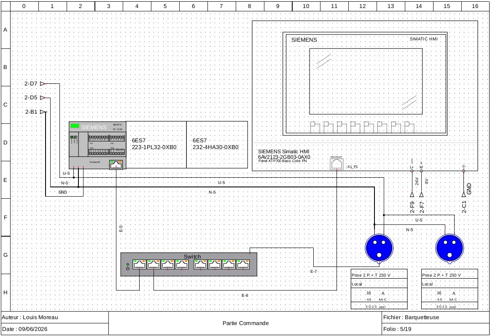
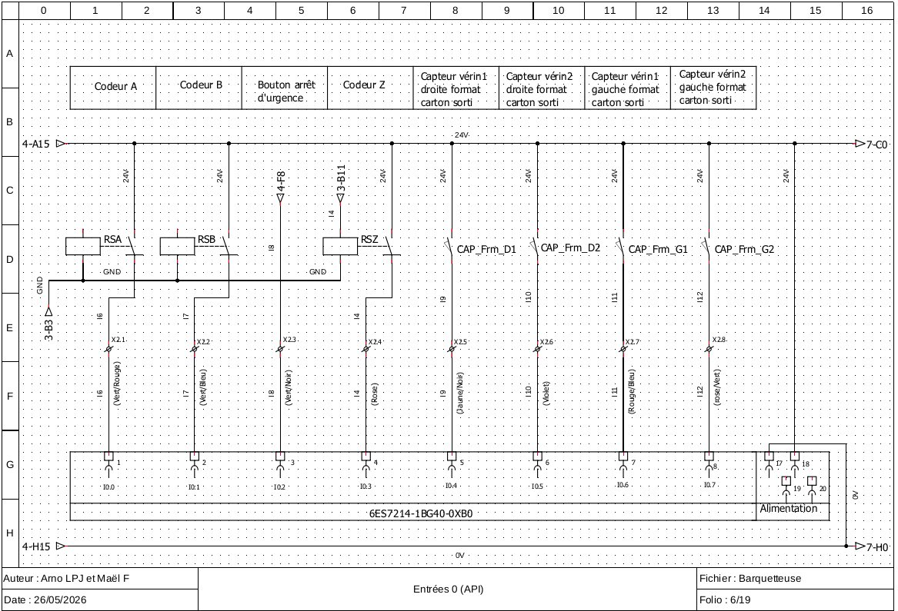
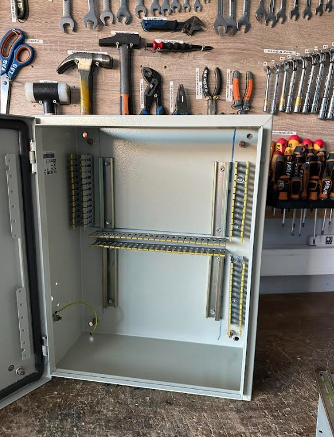
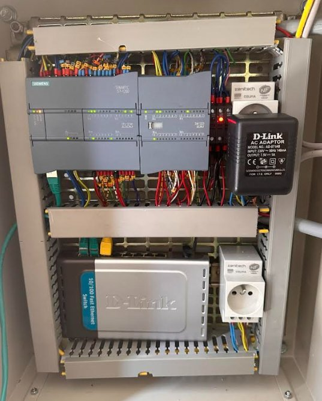
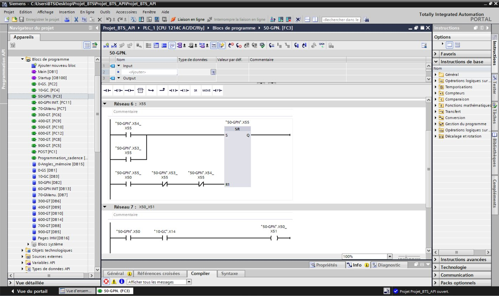
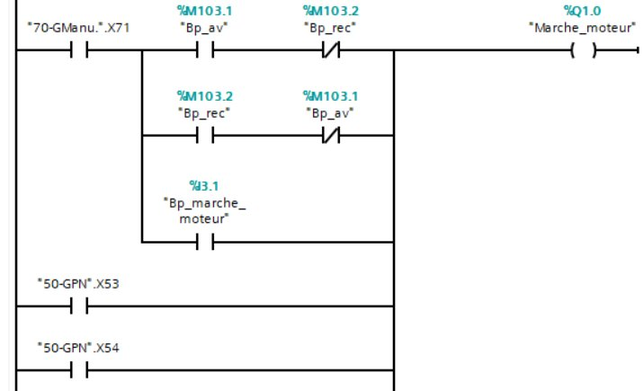
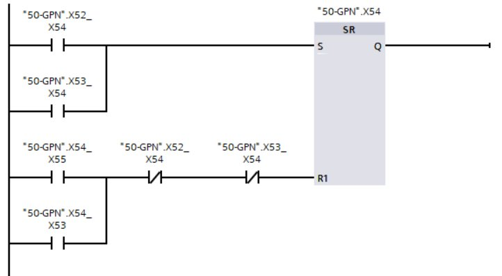

Projet BTS CRSA — 2026
Rétrofit de la partie commande d'une barquetteuse
Don d'une machine industrielle par l'entreprise agro-alimentaire La Belle Henriette à l'école de production de l'Icam : remise à niveau complète de l'automatisme pour la rendre exploitable en formation.

Machine
Barquetteuse — mise en volume de barquettes carton (magasin, ventouses, colle chaude, formage par poinçon, évacuation)
Client
Laurent Micheneau — Icam, école de production
Statut
✅ Machine terminée et fonctionnelle — validée en juin 2026
Rôle
Programmation automate (TIA Portal), schéma électrique, câblage armoire
Contexte général
L'entreprise agro-alimentaire La Belle Henriette a fait don de sa barquetteuse à l'école de production de l'Icam. L'objectif du projet était de réaliser un rétrofit complet de la partie commande pour adapter la machine aux besoins pédagogiques de l'école.
La barquetteuse met en volume des barquettes en carton à plat : alimentation par magasin, préhension par ventouses, dépose de colle chaude, formage par poinçon, puis évacuation des barquettes formées.
Contraintes à respecter
Technique
- Séparer partie commande et partie puissance
- Installer un nouvel automate et une nouvelle IHM
- Conserver le variateur existant
Sécurité
- Conformité aux normes en vigueur
- Bouton d'arrêt d'urgence
- Grafcet de sécurité dédié
Délai
- Machine fonctionnelle pour fin juin
- Validation finale par le client
Tâches réalisées
Analyse fonctionnelle et matérielle de la machine existante
Réalisation du schéma électrique de la partie commande
Récupération et implantation des composants
Réalisation du câblage complet de l'armoire de commande
Programmation de l'automate et essais en simulation
Intégration du programme et essais réels sur la barquetteuse
Schéma électrique
Conception sous QElectroTech du schéma complet de la partie commande : alimentation de l'automate S7-1200, du switch Ethernet et de l'IHM Siemens, puis câblage de toutes les entrées capteurs (codeurs, capteurs vérins, boutons, fins de course).


Folio 5/19 — alimentation automate S7-1200, switch et IHM
Folio 6/19 — câblage des entrées API (codeurs, capteurs, arrêt d'urgence)
| Adresse | Variable | Rôle |
|---|---|---|
| %I0.0 | Codeur_A | Angle total parcouru par le moteur depuis le démarrage |
| %I0.3 | Codeur_Z | Signal émis à chaque tour du moteur |
| %I0.4 – %I0.7 | CAP_Frm_D1/D2/G1/G2 | Capteurs vérins — format carton sorti (droite / gauche) |
| %I2.0 / %I2.1 | Pince_fermee / Pince_ouverte | État de la pince de préhension |
| %I2.5 | Tempera_Colle_OK | Température de la colle suffisante pour utilisation |
| %I2.6 | Defaut_var | Signal de défaut envoyé par le variateur |
Extrait du tableau d'affectation des entrées API
Réalisation de l'armoire de commande
Câblage complet de l'armoire à partir du schéma électrique : implantation de l'automate, du switch Ethernet, de l'alimentation et raccordement de l'ensemble des entrées/sorties sur borniers.


Avant — armoire vide, borniers en attente
Après — automate, switch et alimentation câblés
Programmation de l'automate
Développement du programme sous TIA Portal pour un automate S7-1200 : structuration en blocs fonctionnels (FC) par grafcet — gestion sécurité (GS), gestion cycle (GC), gestion production normale (GPN) — avec mode manuel et mode automatique.

TIA Portal — bloc FC3 (50-GPN), réseaux 6 et 7 de la gestion de production normale


Commande moteur en mode manuel (avance / recul)
Verrouillage SR pilotant l'enchaînement des étapes
Bilan
Machine terminée et fonctionnelle
- Dossier électrique complet, réalisé sous QElectroTech
- Armoire de commande câblée, structurée et validée
- Programme automate opérationnel — mode manuel et mode automatique
- Machine validée par le client en juin 2026
Une expérience révélatrice pour mon parcours professionnel : premier projet où j'ai mené de bout en bout l'analyse, le schéma électrique, le câblage et la programmation d'une machine réelle.
Machine en fonctionnement
Démonstration de la barquetteuse en cycle automatique, après rétrofit complet de la partie commande.
Barquetteuse en cycle automatique — juin 2026